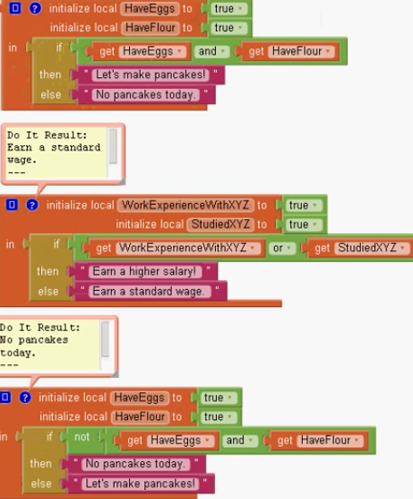
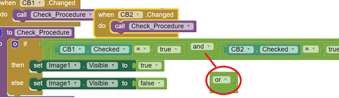
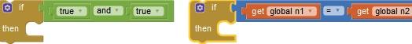
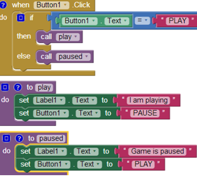
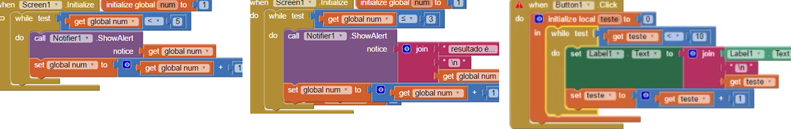
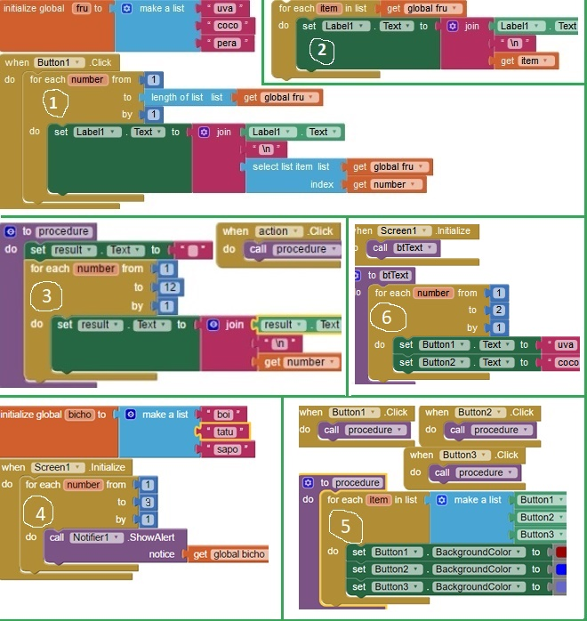

Lógica Components: Dois CheckBox.

Check Box - Lógica And Ckt também pode trabalhar com or. Em then e else poderia ser Labe1.Text com 1 e 0 respectivamente.

Teste de Condição - Exemplos Após ser feito pelo if , caso o resultado seja verdadeiro o código entra na "linha" de baixo. Pode-se fazer testes do tipo igual, diferente, lógica and, lógica or....

Testes lógicos ou condições
https://youtu.be/mSM73Wyjs8Y
if/then/else (Toggle Button) Components: button, label.

While Dois ckt semelhantes.

Diferença While pra Do While: Do While executa no mínimo uma vez, pra depois testar a condicação. While testa primeiro pra depois executar.
Do While, Faça Enquanto.
https://youtu.be/xp9mNxNUxa0?list=PLtchvIBq_CRTAwq_xmHdITro_5vbyOvVw
for each Equivale ao for doutras linguagens.
from: início do contador.
to: até quanto. Note abaixo que está 5 enquanto na lista há 3 elementos.
by: de quanto em quanto, pulando de quanto em quanto.
number: variável do índice atual (isso para cada momento da contagem). Isso não é o valor, o conteúdo daquela posição.
for each in list Versão mais prática do for. A lista com seus vários ítens é conectada e o próprio bloco faz a iteração, repetição. Ou seja, não precisamos determinar o equivalente ao to e nem o by, aonde vai se passando item por item.
item: variável com o item do momento, o atual.
1 - for each normal
2 - for each in list pode substituir o bloco 1 ao lado.
3 - for each (em procedure) contando até 12.
4 - for each com Notifier.
5 - for each in list (em procedure) Pinta a cor de fundo de 3 botões (ao clicar em um deles).
4 - for each Escreve o nome de 2 botões. É semelhante ao ckt 5.
